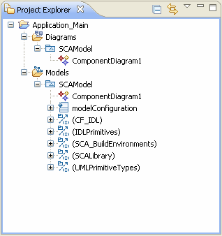
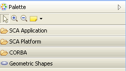
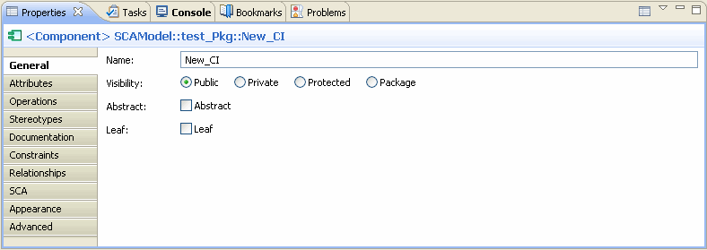

Spectra CX is built on the Eclipse Workbench and Rational Software Modeler environments. As a result the CX user interface simply re-uses the conventions and containers provided by Eclipse and Rational Software Modeler.
For details about the user interface and how to manipulate it, please refer to the Eclipse and Rational Software Modeler help topics devoted to the user interface. There are a number of tutorials that will help you become familiar with your work environment.
CX specific capabilities including windows, wizards, and pop-up menus behave the same way as the Eclipse and Rational Software Modeler elements. Any CX specific user interface elements are highlighted and noted in the appropriate online help topics.
A window contains one or more "perspectives". A perspective defines the initial set and layout of views in the window. Each perspective provides different functionality to accomplish a specific task with specific resources.
The CX perspective has views for modeling components and applications and generating code. The debug perspective has views of tools for target debug and the C/C++ perspective has information about building code.
The following list provides you with a quick reference overview of the UI:



When you are modeling in CX, you are working in the Spectra CX Perspective. For information about perspectives and views, refer to the Eclipse and Rational Software Modeler online help.